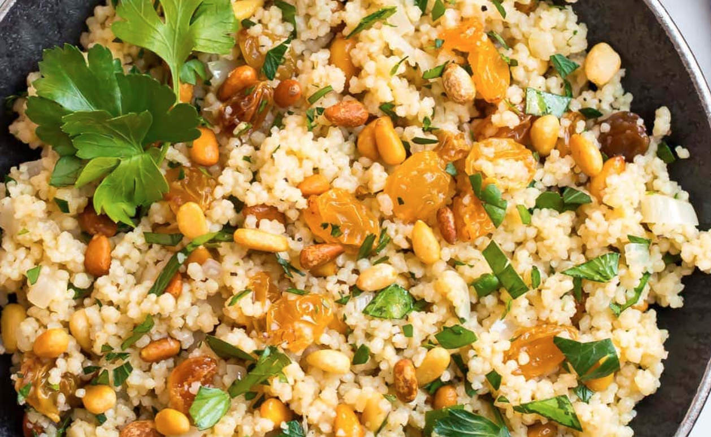

Moroccan Cousous with Grains
The Ingredients
- Couscous
- Quick-cooking and tasty, I like to purchase whole wheat couscous. Like other whole-grain options, it’s higher in protein and fiber than its white counterparts. (Try this Avocado Couscous Grapefruit Salad next.)
- Substitution Tip: If you can’t find it, regular couscous works well in this recipe too.
- Shallot
- Starting the recipe by sautéing a shallot gives the entire dish a more robust, complete flavor.
- Golden Raisins
- A popular ingredient in Moroccan cooking, golden raisins (also in this Moroccan Chickpea Salad) give the couscous recipe bits of sweetness and make it more texturally interesting.
- Pine Nuts
- Another classic ingredient in Moroccan cuisine, pine nuts add pops of nutty intensity and crunch. (I also love pine nuts in this Slow Cooker Wild Rice Pilaf.)
- Substitution Tip: While you only need a small amount for this recipe, pine nuts are pricey. Feel free to swap them for another nut like pistachios or almonds that you may have in your pantry. Be sure to toast your nuts first for maximum flavor and a superior texture.
- Lemon and Parsley
- These two traditional Moroccan ingredients give this easy couscous recipe freshness, color, and life.
- Cumin
- Moroccan cuisine is especially renowned for its spices. This recipe keeps the spices fairly mild so that the couscous pairs well with a variety of dishes. A touch of cumin is all you need.
- TO STORE: Place leftover couscous in an airtight storage container in the refrigerator for up to 3 days.
- TO REHEAT: Gently rewarm leftovers in a large skillet on the stove over medium-low heat. Add a squeeze of lemon juice to brighten the flavors. You can also reheat this dish in the microwave.
- TO FREEZE: Let the couscous cool completely, then store it in an airtight, freezer-safe storage container in the freezer for up to 3 months. Let thaw overnight in the refrigerator before reheating.
Instructions
Preheat the oven to 350 degrees F. Spread the pine nuts in a single layer on an ungreased, rimmed baking sheet. Toast in the oven until fragrant and lightly golden, 5 to 7 minutes, stirring once halfway through. Keep an eye on them and DO NOT WALK AWAY during the last few minutes to make sure those precious pine nuts do not burn. Immediately transfer them to a bowl to stop their cooking and to make sure the hot pan doesn't burn them once they are out of the oven.
In a large skillet, melt the butter over medium heat. Add the shallots and cook for 3 minutes, until they begin to soften. Add the salt, pepper, and cumin and cook for 30 seconds.
Pour in the broth. Increase the heat to high and bring it to a boil. As soon as the liquid begins to boil, remove the pan from the heat. Stir in the couscous, cover, and let sit for 10 minutes.
With a fork, fluff up the couscous. Add the raisins, parsley, lemon juice, olive oil, and toasted pine nuts to the pot, then stir the ingredients together to combine. Taste and adjust seasoning as desired. Enjoy hot.